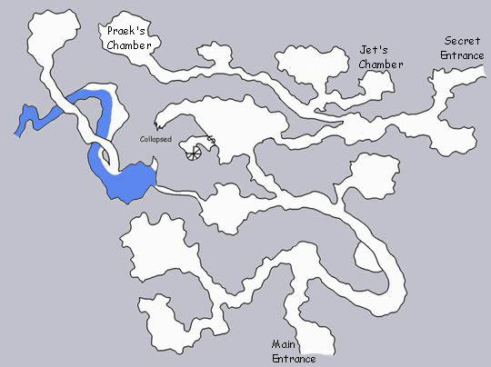
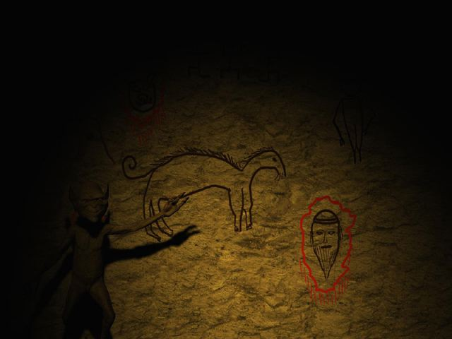

Prelude 1: To Kill a Goblin
Fayo couldn’t believe The parties luck. The town had offered a
substantial reward for each goblin head. They were tired of the raids that
the Goblins had continuously done over the past few years. Yesterday, they
had found four messing with three boars, what appeared to be digging in the
dirt. Each Goblin made more noise before dying than any of the pigs. Now
that they had actually found the cave entrance the town had claimed was
“somewhere just outside the swamp”, they would be rich beyond their
dreams.
Her brother had always chided her about wanting to become a swordfighter, and
adventure about the land looking for fame and glory, rather than settle down
and marry his best friend. She was fairly pretty, but not one of her home
towns best looking girls by far. But if she could get enough of a dowry
together, she could take her pick of men, including even the wealthy merchants
boy, Bearock. Her brother said she would die before ever getting the chance.
He was obviously just trying to scare her. She was good. Maybe even one of
the best swordswomen she’d ever met.
These last three Goblins were huge. With the horrid noises they began to hear
down the tunnel, after that tiny one ran away, they decided it would be
prudent to go now rather than have the entire clan of hundreds rain down on
their heads. Especially if any more adults were this big. She’d thought
that goblins were small feral beasts too stupid to fight back. These three
had swords and spears. This had only been a scouting mission, after all.
Their best weapons, one fighter and their mage were down at camp. Best to go
now and come back in a few hours, when they were better prepared.

The chode that came screaming into the sleeping area set the other chodes into
a panic of squeals and screeches. Once Fwek was able to calm some of the
offspring down by hitting them on the head, she’d always been good at
that, they were able to investigate the passage from where it had come. The
chode sadly wasn’t smart enough to maintain anything beyond babbling
coherence, but it did take them down the passage. It was a nightmare scene
that brought almost uncontrollable shudders and spurts of stories to Jet for a
time.
Then Lop approached the dead leader, Praek, who was nearly twice the size of
even the largest of the little clan, Hek. Lop tentatively poked the knife he
held at the corpses head and neck. Then satisfied jabbed it into the sternum
area and ripped it down the middle of the body. What blood had not left the
cavity before now spilled out gleefully onto the ground, washing over more of
the best furs of the clan already stained with the dried blood. He carefully
picked at different organs, measured the lengths of the intestines, and even
dissected the heart all the while hooting and grunting in a pleased
manner.
“Humph... in my day, we used to get up each morning and wade through more
foul stuff than this.” Jet began to tell stories again of the flight
from the home land when he was a boy. Some of the youth and even a chode or
two of the tattered tiny tribe began to truly listen with eyes wide with
horror, not fascination. Maybe now they would listen better to him.
The dear brain-sick chodes began to play in the dirt, as usual, having
forgotten what had frightened them so badly only minutes ago. He felt there
was something wrong with them. None were blessed by their God, Bargrivyek,
with beauty, intelligence, or even a capable amount dexterity. A goblins
attention span was in general lacking enough to sit and listen to Jets stories
for long. Many began to wander, what appeared to Jet to be aimlessly,
ignoring his cries , threats and warnings of “Better to stick together to
beat these bastards, rather than eat your spleen for lunch. Humph... dumb
Goblins... never listen to their betters or even their elders. “
Even faithful, pretty Fwek grabbed two chodes and some rope in what seemed a
manner for some sport with them. She wandered towards the hidden cave
entrance that the mangy humans had wandered into and fled out of. She came
back alone a short while later only to grab two more and head towards the
front entrance. Jet went to inspect her chore and was pleased at the handy
work. The knots were well tied. Their backs were towards each other so
nothing could sneak up on them. They were gently but firmly staked to the
wall to ensure they wouldn’t get bored and wander off. “Stay!
Guard!” they kept chirping. There was still enough room to pass both
chodes in the passage. An effective alarm system, he thought approvingly.
Twek, the clans last remaining Boarrider, disappeared with Dop to search the
swamps for Tweks young boar. He was actually an apprentice Boar-rider since
he had only recently made his naming day and was now considered an adult.
Though small even by most Goblin standards, his pride of being asked to be the
latest addition to the Boar-riders sometimes made him almost stand up even to
the leader. The gleam in his eye just before leaving told Jet that there
might be trouble. Jet decided to bit it in the but. He grabbed the leaders
talisman and presented it to Fwek in front of the rest of the clan, after Twek
had left. He felt this ensured two things, 1) none would fight to kill one
of the only breedable females in the clan, 2) would keep the last of this
scrap of a clan from choosing the leader the traditional way, fight to the
death, 3) he and their God liked Fwek. It was obvious in her appearance. She
was blessed. (goblins can’t count well)
Lop came wandering out with bits of gore dripping from hands, hair and
shoulders asking for someone to accompany him to search the swamp for herbs
for healing and poisons. Fwek took one look at him and ran from the room.
Lop shrugged and went outside unguarded, staying close to the cave entrance.
He came in humming to himself a short time later.
Jet, disgusted with the apathy of his fellows went back to his room only to
find the hide that served as his door tacked down from the inside. Normally
no one would ever go near his room, but normally no one but the leader had
been allowed in the chambers that over half of the elders of the clan had just
thoroughly inspected and ransacked. The voices responding to his shouts were
those of Lode and Dop, sounding nearly three sheets to the wind. Not unusual
for Lode, since she had learned to make the best ale any Goblin ever had made.
But what was unusual were the grunts and groans, and the offers to “join
the party”. Once he had chased the intruders from his abode, he began to
research spells he knew to help fight the humans and to get a better look at
piece of metal that he recognized from his childhood. Strong, sharp,
hmmmm.
He was alerted from him reveries by chode squeals of alert. He met Fwek by
the hidden entrance and looked out to the swamps edge. He was surprised to
see Dop coming back with 2 Lizardmen in tow. Fwek appeared oddly happy about
this. Lop had apparently wandered out again for more herbs and was covering
his eyes and shaking next to the path in a vain attempt at hiding. It seemed
to be working considering the Lizardmen just walked past him without even a
second glance.
Jet convinced Fwek she must find out what happened and take control of the
situation, as any true leader would. Twek had apparently struck a bargain
with the Lizardmen to renew a trade alliance that had been destroyed years ago
due to the raids fashioned by Praek. They now offered to give the Lizardmen
gifts to prove they wanted the alliance renewed. Hek was sent back with some
of the clans defenders to bring the gift to the Lizardmen and convince them to
come back for more trading.
Three Lizardmen did return to the clearing with their leader, accomaniped by
Dop, Hek and the other fighters, as well as Twek with his young boar, to Fweks
aghast. A bargain was set that if the Lizardmen stayed to help fight, they
could have the dead humans and half the humans items. Jet was pleased with
the reasonable survival skills that he knew Fwek would show.
On his way back into the caves he nearly tripped over a string trap that
looked to be the handy work of Lode. He was pleased to see she was up to her
old tricks again. She hadn’t made much of anything since Preak took over
leadership. Preak didn’t approve of females doing anything more than
spawning young and tending fires. Jet had seen first hand this wasn’t
true. The three females that had escaped from the underdark, their homeland,
had often been able to bully the one male that had escaped with them into
anything that they wanted. Jet was very young when the eldest of the females
found this cave and decided that they would live here. The home had been set
up and much of the hunting done by the females during these early days. They
fashioned the new laws, since the old gods did not rain thunder and lightening
and horrid sunlight on their heads for doing males work, it must have been
ok.
Lop was very good at making poisons and digging through dead things. He made
a good number of sleep potions and sickness and paralysis poisons. These they
dipped arrows into, smeared on spear heads and sword and knife blades. They
were expecting the humans to enter the same passage that they had previously,
but were surprised when they heard two squealing screeches cut short like a
small animal being stepped on very hard. They determined that it had come
from the main entrance near where Lodes beer supply was stashed.
Jet was not surprised that the first near the scene was Lode. She had climbed
a small narrow ledge and had set herself up to rain arrows down on the first
human she could see. The only problem was she was over 100 feet from the
entrance and just around a sharp bend, so she couldn’t see anyone until
they were nearly below her. The rest of the clan caught up and came
tentatively nearer and nearer the entrance. No one could see anything or
anyone out of the ordinary.
They waited for a short while then heard some sounds from the storage area.
Gentle scents of beer began to waft towards them, making Tode whimper. He had
scuttled forward into the passage intersection to get a better look down the
hall towards the dead chodes. All he could see was a dark patch on the ground
that seemed to be spreading, and an increase in the light outside as morning
broke.
Suddenly, a bright light appeared from the storage area across the entrance
threshold from the goblin clan. A large dark shadow emerged from the hall.
It growled in a way the reminder Jet of orcs. It was almost as large as some
orcs he’d seen as a child, before they destroyed his homeland in the
underdark. Behind that shadow was another, almost as large. Just as the
light hit him, illuminating his face for only a moment, the shadow orc saw him
and let out a piercing battle cry. Jet threw up a darkness spell that shaded
him from the dreaded bright light. He threw himself to the ground and was
rewarded by feet slamming into his shoulder, a fierce cry turning into a
surprised squawk and part of a large body painfully landing on him.
Arrows sailed past him, and the body was suddenly a little heavier as another
shadow raced through the dark wall and tripped with a frightened feminine
squeak. More arrows flew, some actually finding their mark, and being
rewarded with another feminine squeak. Sounds of battle and cries of alarm
rose from Todes side of the wall of darkness. The larger body on top of Jet
managed to stand with the assistance of another shadow. The female shadow
couldn’t stand and had begun to breath in gasps and wheezes. She was
dragged away by one of the other shadows. In all Jet had counted 5 humans,
which is lucky since that was all he could count to, four times, but then he
had used up all fingers and toes and nothing seemed to matter after that many
of anything, anyhow.
Shortly later Hek made an inventory of losses they had received. Tode was
dead, two chodes had been extinguished, and worst of all, Lodes supply of beer
was obliterated. A lively discussion ensued of how better to prepare for the
next attack, since they did have a limited supply of chodes. Maybe the chodes
could be used to swarm. Twek had seen ants do that to sticks he had stuck
into nests some time ago...
Fayo couldn’t breathe. Nothing that her faithful friends could do for
her helped. None of them knew much healing. They hadn’t thought they
would need it facing down some useless, annoying goblins. She thought of her
brother and what he would say. Maybe she should have married his best friend,
she thought as the blackness covered her sight.
by Lisa Paulick
